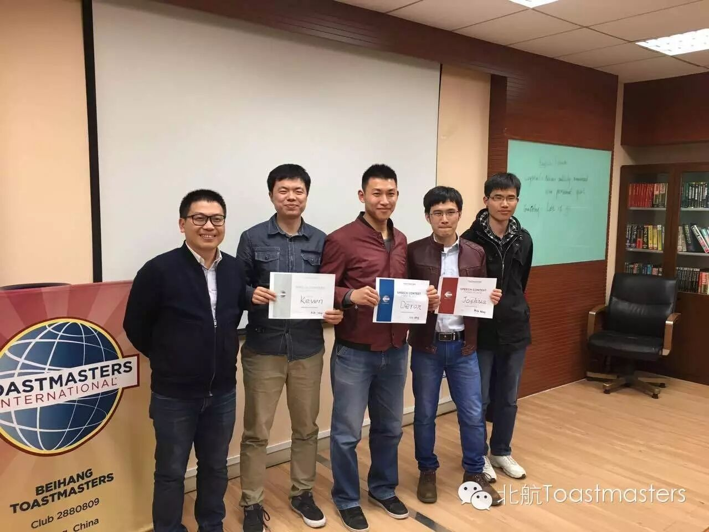
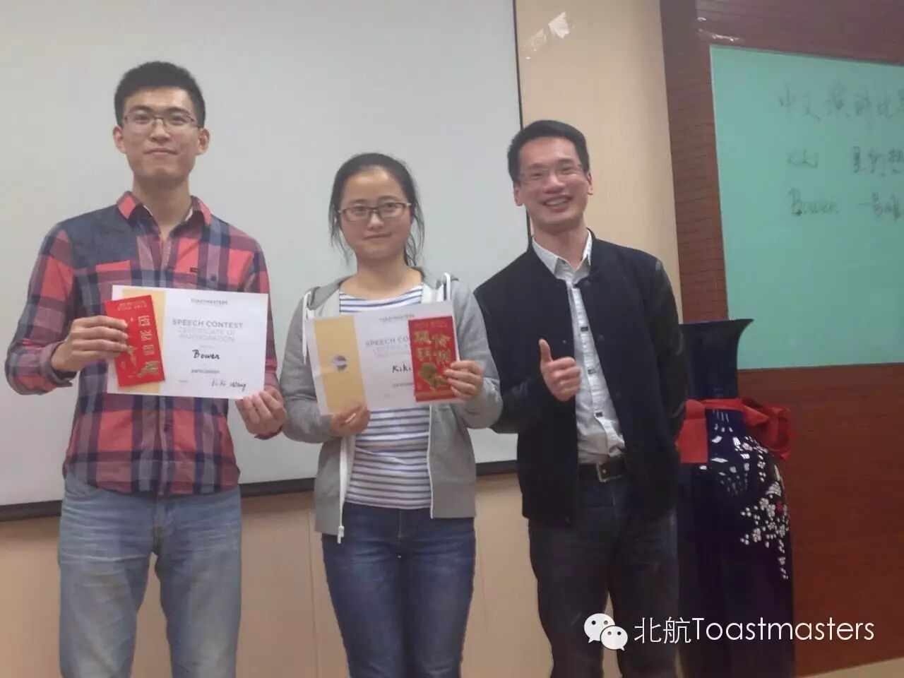
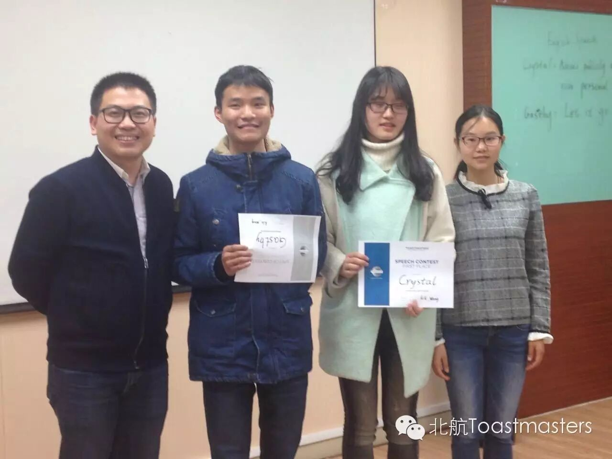
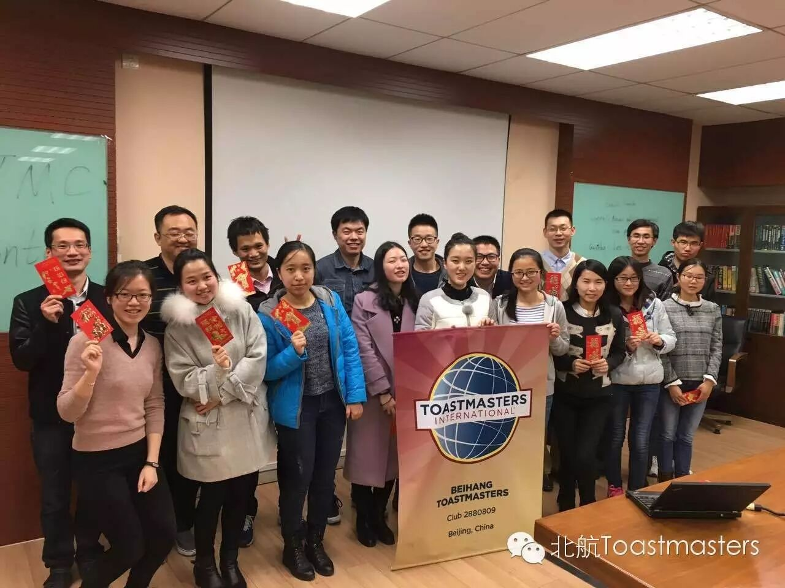

← 返回存档目录
本次比赛，不仅汇聚了北航头马的各位大咖，还有幸邀请到来自其他8个头马俱乐部的牛人担任评委，精彩程度自不必说~
本次比赛分为三个环节：英文即兴演讲、中文背稿演讲、英文背稿演讲。来跟小编一起回顾下精彩瞬间吧
Recently,Aiphago has defeated Li Shishi twice in the game.There is a concern that AI will pose a threat to human beings.
What is your opinion ?
【正方】
人工智能有可能威胁到人类，理由是：1、人类思考问题的方式与计算机之间不存在不可逾越的差别，计算机程序可以模拟人类思考；2、程序正在越来越复杂，程序员对程序的掌控能力在逐渐降低。所以任其发展的话，人工智能迟早会在思考能力上超越人类
完全反对人工智能的发展会威胁人类。原因 1. 人不可能战胜机器 2. 技术不是越新越好 3. 人类应当将注意力转移到人文艺术上来
主要是机器人对人类有利有弊，我的观点只要是好好利用，利大于弊。（简姐姐的思维好像更严谨一点哦，讲的很客观~）
1.机器人无法自己产生意识，产生自主的行为。2机器人需要人输入指令才能运行，需要靠人为的操作
最近炒作人机大战有点火，有些人开始担心人类要被淘汰了，我不同意。我觉得机器人根本不需要和人类竞争，他们可以适合任何环境，而人类却只能呆在地球上。而且机器没有野心也没有欲望，不必担心他们
“里约热内卢”——Kiki
我从小l，n不分，感谢身边“语文老师”四年的嘲笑和纠正，我现在已经分清了，假期回家还纠正了路牌上的拼音错误，我很骄傲啊。即使是犯了十几年的错误，想改还是能改的~（为什么我的脑海里都是“团结就是你娘，团结就是你娘，这你娘是铁，这你娘是钢……”）
《一号难求》 —— Bowen
这是帮妈妈排号治疗间歇性口腔溃疡时的所见所闻，真切的感受到了一号难求，最后得出一个无奈的结论，现在想要挂上专家号有三个办法：彻夜排队、找关系、找黄牛。最后希望，大家都不要生病，健康是福。
永远不要告诉别人你的计划或者目标。知道为什么吗？因为有很多研究表明，没有把自己的目标说出来的人达到目标的概率更大。考考你们，你想跟别人说你的计划或者目标的时候，你应该说什么？
答：“Nothing.”
寒假的时候参加了小学聚会，原来玩的很好的朋友，现在却没多少共同语言。从小到大有很多朋友离开了我们，不过没关系我们不断成长的过程中，也遇到了很多新的朋友。所以，下次再有朋友离开，不必太难过，just let it go。



